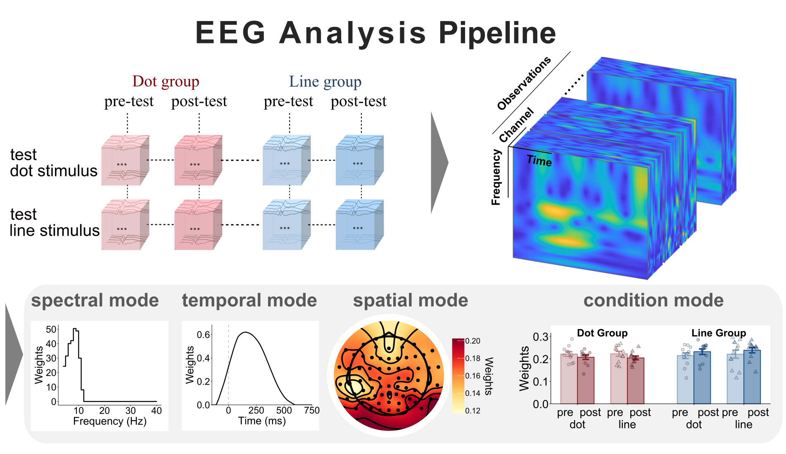

PhD in Psychology
Faculty of Psychology, Beijing Normal University ↗
Cognitive Neuroscience · Supervisor: Dr. Jing Huang ↗
I am a PhD student in Cognitive Neuroscience at Beijing Normal University, supervised by Dr. Jing Huang.
My research investigates the cognitive and neural mechanisms underlying interactions between action and cognition, with a focus on:
Beijing Normal University · Zhuhai, China
pxy1999799@gmail.comFaculty of Psychology, Beijing Normal University ↗
Cognitive Neuroscience · Supervisor: Dr. Jing Huang ↗
School of Psychology, Beijing Sport University ↗
Cognitive Neuroscience · Supervisors: Prof. Yu Zhang ↗ · Associate Prof. Jie Li ↗
College of Economics and Management, China Agricultural University ↗
01
current work
Can sensorimotor functioning explain individual differences in how habitual physical activity translates into higher cognitive functioning?
Conducted behavioral data analysis and robust moderation modeling; led manuscript preparation and submission as first author.
Robust moderation analysis
Building on our previous research (Yuan et al., 2023), we investigated the role of visuomotor integration in the relationship between physical activity and visual working memory. Moderation analyses suggested that WM-guided action precision may serve as a boundary condition for the association between physical activity and visual working memory.
OutputFirst-author manuscript submitted
Ongoing Research | TMS–EEG · Visual Working Memory
Building on our group's findings on retrospective attentional strengthening of WM representations (Li et al., 2023), this project extends the investigation to attention- and motor-related cortical regions.
Contributed to research discussions and experimental setup; currently conducting preliminary analyses of concurrent TMS–EEG data.
Concurrent TMS–EEG
The exploratory behavioral study revealed differences in WM performance across stimulation conditions. Ongoing TMS–EEG experiments investigate WM-related neural dynamics under different retrospective cueing conditions.
Does transfer-related plasticity depend on the processing demands of a task?
Conducted EEG data analysis, including time–frequency analysis and tensor decomposition; wrote the manuscript as first author.
Time–frequency analysis · tensor decomposition
Perceptual training with line and dot stimuli produced different degrees of behavioral transfer. EEG tensor decomposition identified distinct training-related neural components for the two formats, both involving alpha-band activity but differing in their temporal and spatial characteristics.
OutputsFirst-author manuscript submitted | Oral presentation at Joint ESCoP–CoPM Meeting 2026

02
Research during my master’s studies
Master’s thesis · fNIRS hyperscanning
I developed a dyadic paradigm adapted from multiple-object tracking. Cooperative performance increased functional connectivity and inter-brain synchrony in the prefrontal cortex and right temporoparietal junction compared with parallel task performance.
Eye tracking · Dynamic attention · 2023–2024
I contributed to experiments on goal-directed tracking. Eye-movement patterns shifted from predominantly central fixation to alternating fixations between targets as the number of tracked objects increased.
03
Pan, X., Fan, T., Wang, F., Zhou, T., Song, Y., & Huang, J. Format-Specific Processing Demands Determine Transfer of Perceptual Learning.
Pan, X., Liu, L., Long, Y., Li, X., Li, Z., Fan, T., & Huang, J. Visuomotor Integration Moderates the Effect of Physical Activity on Visual Working Memory in Young Adults.
Pan, X., Fan, T., Wang, F., Zhou, T., Song, Y., & Huang, J. (2026). From Sensory Tuning to Representational Convergence: Multidimensional EEG Dynamics of Visual Perceptual Learning. Joint ESCoP–CoPM Meeting 2026. Oral presentation.
Pan, X., Li, J., & Zhang, Y. (2023). The Influence of Depth on Visual Attention in 3D Space. 25th National Academic Congress of Psychology, China. DOI ↗
EEG · Eye tracking · fNIRS hyperscanning
EEG: ERP · Time–Frequency Analysis · Tensor Decomposition
Eye Tracking: Eye-Movement Analysis
fNIRS: Functional Connectivity · Inter-Brain Synchrony
MATLAB · R